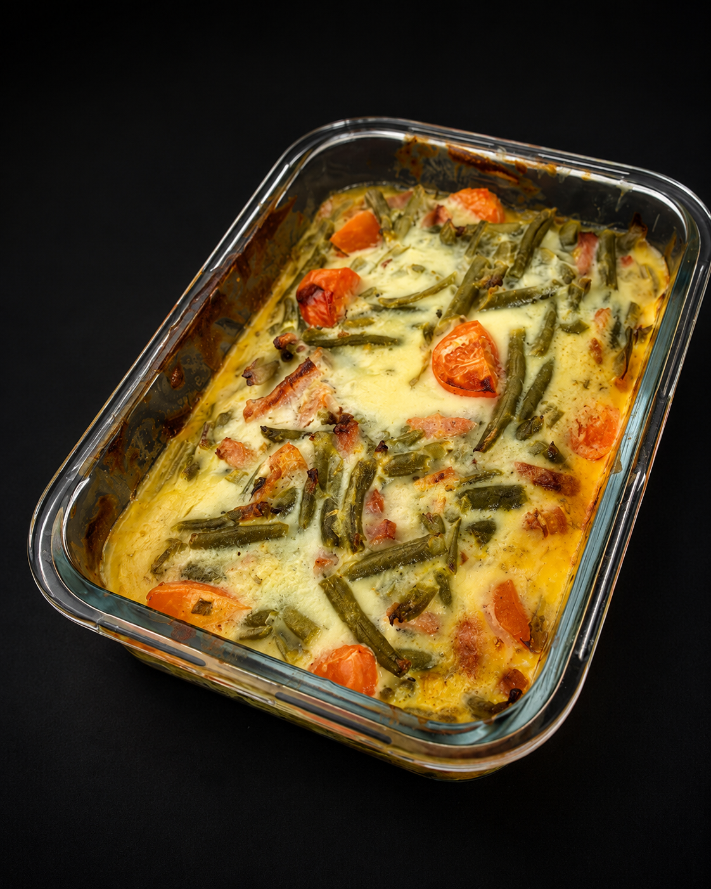

Gratin protéiné aux haricots verts et bacon

Ingrédients
- 2 œufs
- 120g de skyr
- Des épices au choix
- 1 tomate
- 180g de haricots verts
- 100g d’allumettes de bacon allégées
Préparation
- Préchauffer le four à 180°C
- Mettre les 2 œufs, le skyr et les épices dans un plat en verre allant au four, puis mélanger
- Ajouter la tomate coupée en dés, les haricots verts coupés et les allumettes de bacon allégées
- Mélanger le tout pour bien répartir les ingrédients
- Enfourner pendant 30 minutes à 180°C
- Servir chaud pour le midi, ou garder au frigo pour plus tard puis réchauffer
Valeurs nutritionnelles (approx.)
Par portion : 380 kcal • 47 g protéines • 15 g lipides • 12 g glucides • 6 g fibres